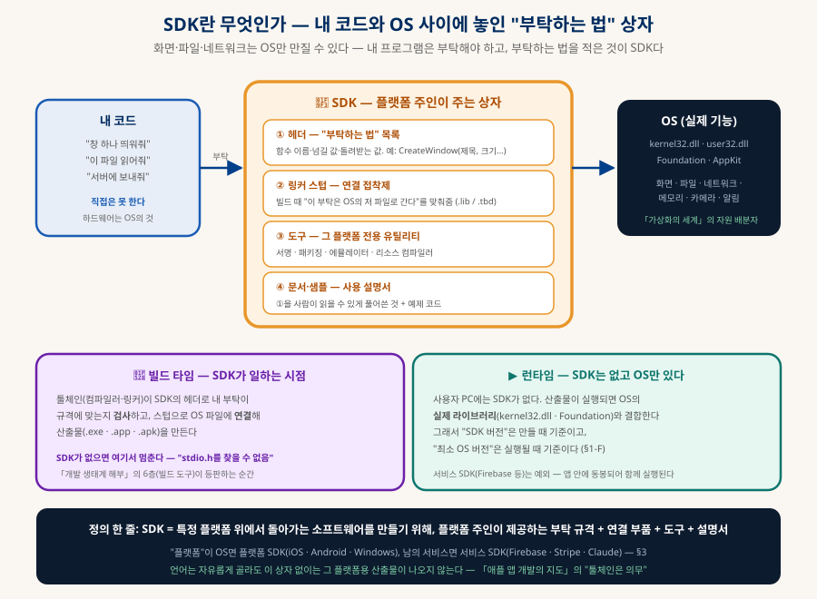
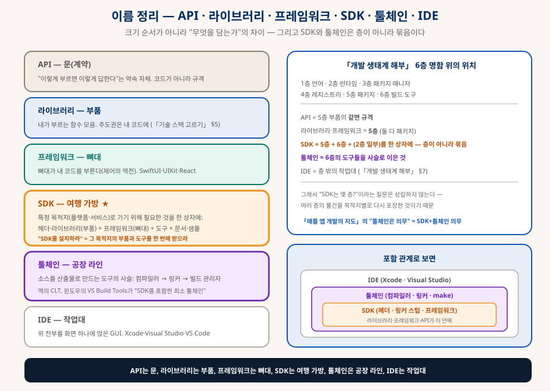
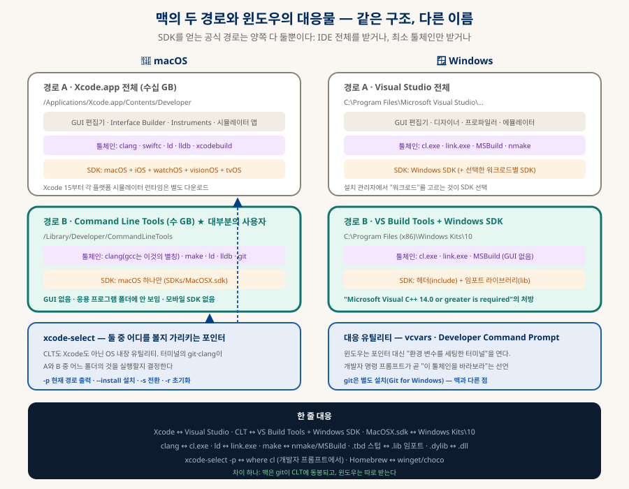

SDK와 툴체인
맥과 윈도우의 개발 도구 해부
맥북을 새로 사서 뭘 하다 보면 SDK, Command Line Tools, xcode-select, Homebrew라는 이름이 계속 나온다. 윈도우만 쓰던 사람에게 이 넷의 관계는 아무도 설명해주지 않는다. 이 문서는 SDK가 무엇인지부터, 맥의 두 경로(Xcode와 CLT), 윈도우의 대응물(VS Build Tools와 Windows SDK), 그리고 "왜 pip install에서 한 번도 오류가 안 났는가"까지를 한 장의 지도로 만든다.
0. 한눈에 보기 — 네 문장
급한 사람을 위한 요약
층이 아니라 묶음 (§2)
IDE 전체 또는 최소 툴체인 (§5·§6)
오류를 못 본 이유 (§7)
xcode-select --install (§9)
1. SDK란 무엇인가 — 처음부터
개념이 없는 상태에서 출발하는 절
A문제 — 내 프로그램은 화면을 직접 못 만진다
프로그램이 하는 일 대부분은 결국 화면에 그리기, 파일 읽고 쓰기, 네트워크로 보내기, 소리 내기다. 그런데 이것들은 전부 하드웨어를 만지는 일이고, 하드웨어는 OS의 것이다. 「가상화의 세계」에서 OS를 "자원 배분자"라고 했던 그 의미다. 내 코드는 화면에 직접 점을 찍을 수 없고, OS에게 "창 하나 띄워줘"라고 부탁해야 한다.
그러면 질문이 생긴다. 부탁은 어떻게 하나? 어떤 이름의 함수를 어떤 값과 함께 불러야 OS가 알아듣나? 윈도우는 창을 띄우는 부탁의 이름이 CreateWindow이고 맥은 NSWindow인데, 이 목록은 수만 개다. 이 "부탁하는 법"의 목록과, 그 부탁을 실제 OS에 연결해 주는 부품과, 그 플랫폼 전용 도구를 한 상자에 담아 플랫폼 주인이 나눠주는 것이 SDK다.

B정의 — 한 줄과 풀어쓰기
풀어쓰면 — "플랫폼"은 iOS·Android·Windows 같은 OS일 수도, Firebase·Stripe 같은 남의 서비스일 수도 있다(§3). "주인"은 애플·구글·마이크로소프트·해당 회사다. "만들기 위해"가 핵심이다 — SDK는 만드는 쪽의 물건이지, 사용자 PC에서 실행되는 물건이 아니다(§1-E).
C상자를 열어보면 — 실제 폴더의 모습
SDK는 대부분 실행 아이콘이 없는 파일 묶음이다. 맥과 안드로이드의 SDK 폴더를 열면 대략 이렇다:
MacOSX.sdk/ Android SDK/
├─ usr/include/ ├─ platforms/android-35/ ← OS 35 버전의 부탁 규격
│ ├─ stdio.h ← 부탁 규격(C 표준) │ └─ android.jar
│ └─ unistd.h ├─ build-tools/35.0.0/ ← 패키징·서명 도구
├─ usr/lib/*.tbd ← 연결 스텁 ├─ platform-tools/adb ← 기기와 통신
└─ System/Library/Frameworks/ ├─ emulator/ ← 가짜 폰
├─ Foundation.framework └─ sources/ ← 설명서 겸 원본
└─ AppKit.framework ← 창·버튼헤더 파일 하나를 열면 이런 줄이 있다 — int open(const char *path, int flags); — "open이라는 부탁은 경로 문자열과 옵션 숫자를 받고 정수를 돌려준다"는 규격 한 줄이다. 실제로 파일을 여는 코드는 여기 없다. 그건 OS 안에 있다. SDK의 헤더는 전화번호부이지 전화 상대가 아니다.
D개발자가 쓰는 순서 — 다섯 걸음
| 걸음 | 하는 일 | 예 |
|---|---|---|
| ① 설치 | 플랫폼 주인에게서 상자를 받는다 — IDE에 동봉되거나 최소 툴체인으로 (§5·§6) | Xcode / CLT · Android Studio · Visual Studio 설치 관리자 |
| ② 불러오기 | 코드 첫 줄에서 "이 상자의 규격을 쓰겠다"고 선언 | import UIKit · #include <windows.h> · import firebase_admin |
| ③ 부탁 작성 | 규격에 맞춰 함수를 부른다 — 이 시점엔 아직 아무 일도 안 일어난다 | let w = NSWindow(...) |
| ④ 빌드 | 툴체인이 SDK 헤더로 부탁이 규격에 맞는지 검사하고, 스텁으로 OS 파일에 연결해 산출물을 만든다 | clang · cl.exe · gradle → .app · .exe · .apk |
| ⑤ 실행 | 산출물이 사용자 PC의 실제 OS 라이브러리와 결합해 돌아간다 — SDK는 이 자리에 없다 | 사용자가 앱 아이콘을 누른다 |
②③은 사람이, ④는 툴체인이, ⑤는 OS가 한다. SDK가 실제로 "일하는" 순간은 ④ 하나뿐이다 — 그래서 SDK가 없어도 코드는 쓸 수는 있고, 빌드에서 "stdio.h를 찾을 수 없음"으로 멈춘다(§7).
E"SDK 없이 하면?" — 왜 의무인가
이론상 규격을 직접 적을 수는 있다. 함수 하나의 이름과 형식을 내가 헤더에 손으로 쓰고 링크만 맞추면 컴파일은 된다. 그러나 부탁 규격은 수만 개이고 OS 버전마다 바뀐다. 누구도 이것을 손으로 관리하지 않으므로 "SDK 없이"는 현실에서 "그 플랫폼용 산출물을 못 만든다"와 같은 말이 된다. 「애플 앱 개발의 지도」가 "언어는 자유, 툴체인은 의무"라고 한 이유가 정확히 이것이다 — 언어는 골라도 부탁 규격은 애플 것을 받아야 한다.
FSDK 버전의 세 숫자 — 만들 때 기준과 실행될 때 기준
"SDK 35", "iOS 18 SDK"라는 숫자를 만나면 두 질문을 구분해야 한다. 어느 OS 버전의 부탁 규격으로 만들었나(빌드 기준)와 어느 OS 버전부터 실행되나(실행 기준)는 다른 숫자다:
| 숫자 | Android 이름 | iOS 이름 | 뜻 |
|---|---|---|---|
| 빌드 기준 | compileSdk | SDK 버전 (Xcode에 동봉) | 이 버전의 규격까지 쓸 수 있다. 높을수록 새 기능 사용 가능 |
| 동작 기준 | targetSdk | (동일) | "나는 이 버전의 규칙을 따른다"는 선언 — 스토어가 최신을 의무화하는 숫자 (「앱 출시의 관문」 §2-1) |
| 실행 기준 | minSdk | Deployment Target | 이 버전 미만의 기기에서는 설치 불가. 낮출수록 사용자 폭이 넓고 새 기능은 조건부로 써야 한다 |
"최신 SDK로 빌드하라"는 스토어 요구는 빌드·동작 기준을 올리라는 것이지, 오래된 폰을 버리라는 뜻이 아니다 — 실행 기준은 따로 낮게 둘 수 있다. 세 숫자를 섞으면 "왜 새 SDK로 빌드했는데 구형 폰에서도 도나?"라는 혼란이 생긴다.
G흔한 오해 다섯
| 오해 | 실제 |
|---|---|
| SDK는 프로그램이다 | 대부분 실행 아이콘 없는 파일 묶음이다. 응용 프로그램 폴더에 안 보이는 이유 (§5) |
| SDK를 깔면 그 플랫폼 앱이 실행된다 | SDK는 만드는 쪽 물건. 실행은 OS가 한다. 에뮬레이터가 포함되면 "가짜 기기"로 실행해 볼 수는 있다 |
| SDK와 API는 같은 말 | API는 부탁 규격 자체(문). SDK는 규격 + 연결 부품 + 도구 + 설명서(가방). API만 있으면 HTTP를 직접 짜야 하고, SDK가 있으면 함수 하나로 끝난다 (§2) |
| 언어마다 SDK가 다르다 | 플랫폼 SDK는 플랫폼마다다. 같은 iOS SDK를 Swift·Objective-C·(브릿지를 거쳐) JS가 쓴다. 서비스 SDK는 언어별 포장이 따로 나오기도 한다 |
| SDK 버전 = 앱이 요구하는 최소 OS | 아니다 — 그건 minSdk·Deployment Target이라는 별개 숫자 (§1-F) |
2. 이름 정리 — 여행 가방과 공장 라인
API · 라이브러리 · 프레임워크 · SDK · 툴체인 · IDE

| 이름 | 비유 | 정체 | 6층 명함에서 |
|---|---|---|---|
| API | 문(계약) | "이렇게 부르면 이렇게 답한다"는 약속. 코드가 아니라 규격 | 5층 부품의 겉면 |
| 라이브러리 | 부품 | 내가 부르는 함수 모음. 주도권은 내 코드에 | 5층 |
| 프레임워크 | 뼈대 | 뼈대가 내 코드를 부른다(제어의 역전). SwiftUI·React | 5층 |
| SDK ★ | 여행 가방 | 특정 목적지로 가기 위한 부품·뼈대·도구·문서를 한 상자에 | 묶음 — 5층+6층+(2층 일부) |
| 툴체인 | 공장 라인 | 컴파일러 → 링커 → 빌드 관리자의 사슬 | 6층 도구들의 사슬 |
| IDE | 작업대 | 위 전부를 화면 하나에 얹은 GUI | 층 밖 (「개발 생태계 해부」 §7) |
3. SDK의 두 얼굴 — 플랫폼 SDK와 서비스 SDK
같은 이름, 다른 크기
| 플랫폼 SDK | 서비스 SDK | |
|---|---|---|
| 목적지 | OS·기기 — 그 위에서 돌아가는 앱을 만든다 | 남의 서비스 — 그것을 내 코드에서 편하게 부른다 |
| 예 | iOS SDK · Android SDK · Windows SDK · JDK | Firebase SDK · Stripe SDK · Supabase 클라이언트 · Claude SDK |
| 상자 안 | 헤더·링커 스텁·컴파일러·에뮬레이터·서명 도구·문서 | 사실상 API 클라이언트 라이브러리 — HTTP를 감싼 함수들 + 문서 |
| 크기 | 수 GB ~ 수십 GB | 수 MB — pip·npm으로 받는 패키지 하나 |
| 없으면 | 그 플랫폼용 산출물을 만들 수 없다 | HTTP 요청을 직접 짜면 된다 — 편의의 문제 |
이 저장소에서 여러 번 본 "이름의 다의성" 패턴이다. Claude Agent SDK는 서비스 SDK라서 에뮬레이터 같은 것이 없고 pip 패키지 하나다. 반면 iOS SDK는 Xcode 안에 동봉되는 플랫폼 SDK라서 그것 없이는 iOS 앱 바이너리가 나오지 않는다. 자바의 JDK는 플랫폼 SDK인데 목적지가 OS가 아니라 JVM이라는 가상 플랫폼이라는 점만 다르다 — JRE(실행만)에 컴파일러와 도구를 더한 것이며, 「개발 생태계 해부」의 "컴파일러는 런타임이 아니다" 구분이 그대로 적용된다.
4. 상자 안 — Windows SDK vs macOS SDK
헤더 · 링커 스텁 · 도구, 그리고 두 회사의 포장법 차이
플랫폼 SDK의 핵심은 셋이다. 헤더는 OS가 제공하는 함수의 이름과 형식이 적힌 선언서, 링커 스텁은 빌드 시점에 내 코드가 OS 내부 라이브러리와 올바르게 연결되도록 심볼을 맞춰주는 접착제, 도구는 서명·패키징·리소스 컴파일 같은 플랫폼 전용 유틸리티다. 여기까지는 두 회사가 같고, 포장법이 다르다:
| Windows SDK | macOS SDK (MacOSX.sdk) | |
|---|---|---|
| API 체계 | Win32 · COM · DirectX · Windows App SDK | POSIX(UNIX 표준) + Cocoa(Foundation·AppKit) + Metal |
| 포장 단위 | 헤더 폴더(include)와 라이브러리 폴더(lib)를 따로 | 기능별 Framework 번들 — 헤더와 바이너리 참조를 한 폴더에 |
| 링크 방식 | 임포트 라이브러리(.lib) 참조 → 런타임에 DLL 로드 | 텍스트 스텁(.tbd) 참조 → 런타임에 dyld 공유 캐시 연결 |
| 대표 헤더 | windows.h · winsock2.h | unistd.h · Foundation/Foundation.h |
| 설치 위치 | C:\Program Files (x86)\Windows Kits\10 | /Library/Developer/CommandLineTools/SDKs/MacOSX.sdk |
| 특징 | 수십 년치 하위 호환이 한 킷에 공존 | .tbd는 심볼 이름만 적은 텍스트라 SDK가 가볍다 |
5. 맥의 두 경로 — Xcode 전체와 Command Line Tools
양자택일이 아니라 포함 관계

| 경로 A · Xcode.app | 경로 B · Command Line Tools ★ | |
|---|---|---|
| 누구용 | iOS·macOS GUI 앱 개발자 | 터미널·웹·백엔드·데이터·스크립팅 — 대부분의 맥 사용자 |
| 크기 | 수십 GB (시뮬레이터를 받을수록 커짐) | 수 GB |
| 툴체인 | clang · swiftc · ld · lldb · xcodebuild | clang(gcc는 별칭) · make · ld · lldb · git |
| SDK | macOS + iOS + watchOS + visionOS + tvOS | macOS 하나 |
| GUI | 편집기 · Interface Builder · 시뮬레이터 앱 | 없음 — 응용 프로그램 폴더에 보이지 않는다 |
| 설치 | App Store | xcode-select --install 또는 git 첫 실행 시 팝업 |
| 경로 | /Applications/Xcode.app/Contents/Developer | /Library/Developer/CommandLineTools |
6. 윈도우 대응물 — 1:1 대응표
윈도우만 쓰던 사람을 위한 번역기
| 역할 | macOS | Windows |
|---|---|---|
| IDE 전체 | Xcode.app | Visual Studio |
| 최소 툴체인 + SDK | Command Line Tools | VS Build Tools + Windows SDK |
| 플랫폼 SDK 실물 | MacOSX.sdk (Framework 번들·.tbd) | Windows Kits\10 (include·lib) |
| C/C++ 컴파일러 | clang (gcc는 별칭) | cl.exe (MSVC) |
| 링커 | ld | link.exe |
| 빌드 관리자 | make · xcodebuild | nmake · MSBuild |
| 디버거 | lldb | Visual Studio 디버거 · WinDbg |
| 동적 라이브러리 | .dylib · Framework | .dll |
| 링크용 참조 파일 | .tbd 텍스트 스텁 | .lib 임포트 라이브러리 |
| "어느 툴체인을 쓸지" | xcode-select 포인터 | 개발자 명령 프롬프트(vcvars가 환경 변수 세팅) |
| OS 패키지 매니저 | Homebrew | winget · Chocolatey |
| git | CLT에 동봉 | 별도 설치 (Git for Windows) |
| 빌드 도구 부재 시 오류 | xcrun: error: invalid active developer path | Microsoft Visual C++ 14.0 or greater is required |
「애플 앱 개발의 지도」 §0의 윈도우↔맥 대응표가 앱 개발 과정의 대응이었다면, 이 표는 그 아래 설치 층위의 대응이다. 가장 큰 차이 하나는 git이다 — 맥은 툴체인에 동봉되어 "git을 치면 툴체인 설치 팝업이 뜨는" 구조이고, 윈도우는 git이 독립 프로그램이다. 그래서 윈도우 출신은 "git이 왜 컴파일러 설치를 요구하지?"라는 의문을 갖게 되고, 그 답이 §5의 포함 관계다.
7. 왜 필요한가 — 빌드 소환 조건
"pip install에서 오류를 본 적이 없다"의 정확한 이유
C++를 쓰지 않아도 툴체인이 필요한 이유는 다른 언어의 패키지 안에 C 코드가 숨어 있기 때문이다. NumPy·Pandas의 핵심 연산, node의 sharp·sqlite3 같은 네이티브 모듈은 속도를 위해 C/C++로 쓰였다. 그런데 대부분의 사용자가 오류를 한 번도 못 본 이유가 있다 — 패키지 생태계가 완제품을 미리 구워 배포하기 때문이다:
| 생태계 | 완제품의 이름 | 동작 |
|---|---|---|
| Python (pip) | 바이너리 휠 — numpy-…-macosx_arm64.whl | 내 OS·CPU·파이썬 버전에 맞는 휠이 있으면 내려받아 압축만 푼다. 컴파일러 호출 없음 |
| Node (npm) | 사전 빌드 바이너리 — prebuild-install·node-pre-gyp | GitHub Releases 등에서 OS·Node 버전에 맞는 바이너리를 받는다 |
| Homebrew | Bottle | 미리 컴파일된 tar를 받아 푼다. 대부분의 formula가 bottle 제공 |
| 순수 언어 패키지 | — | requests·FastAPI·React·Express는 C 코드가 없어 애초에 컴파일러가 불필요 |
7-1. 빌드 소환 — 완제품이 있을 때와 없을 때 (동적)
A아래 레인으로 떨어지는 상황 — 실제로 오류를 만나는 때
| 상황 | 왜 완제품이 없나 |
|---|---|
| 갓 나온 파이썬·Node 버전 | 패키지 제작자가 아직 그 버전용 휠을 안 올렸다 — 새 메이저 버전 직후 몇 주가 위험 구간 |
| 비주류·레거시 패키지 | 사전 빌드를 아예 제공하지 않는다 |
| 소스 직접 설치 | pip install git+https://… 는 정의상 소스 빌드 |
| 새 OS 판올림 직후 Homebrew | 그 OS 버전용 bottle이 아직 없어 소스 빌드로 전환 |
| 특수 CPU·옵션 | 빌드 옵션을 직접 주거나, 흔치 않은 조합 |
그래서 답은 이렇다. 평소에는 툴체인이 소환되지 않아서 있는지도 모른다. 그러나 위 상황 중 하나에 들어가는 순간 소환되고, 그때 없으면 빨간 오류가 뜬다. 툴체인은 보험이며, 맥에서는 그 보험이 git과 함께 오기 때문에 대부분 이미 들어 있다.
8. Homebrew는 왜 CLT를 요구하나 — 정확한 이유
흔한 설명 중 틀린 것 하나를 걸러내며
| 이유 | 내용 | 판정 |
|---|---|---|
| ① git 의존 | Homebrew 본체가 git 저장소다. 설치 스크립트가 git clone을 하고, brew update가 본체를 git으로 갱신한다. git은 CLT에 동봉 | 맞음 |
| ② 소스 빌드 대비 | bottle이 없는 formula(§7-A)는 ./configure && make 를 돌린다 — 그때 clang·make·SDK가 필요. Homebrew는 자체 컴파일러를 들고 다니지 않고 Apple 툴체인을 전제한다 | 맞음 |
| ③ "bottle도 SDK와 결합해야 한다" | bottle은 이미 링크가 끝난 바이너리라 실행에 SDK가 필요 없다. 동적 링크는 런타임에 OS 라이브러리와 붙는 것이지 SDK 헤더를 보는 게 아니다 | 틀림 |
| ④ 패키지 명세를 git으로 받는다 | 2023년부터 기본값이 JSON API다 — formula 명세는 formulae.brew.sh에서 JSON으로 받고, homebrew-core 저장소를 통째로 clone하지 않는다. 본체만 git | 낡음 |
9. 확인 · 설치 · 업데이트 · 판올림
평소엔 잊고 지내다 1년에 한 번 꺼내는 명령들
| 하고 싶은 것 | 명령 · 경로 | 결과 읽는 법 |
|---|---|---|
| 설치됐나 (터미널) | xcode-select -p | /Library/Developer/CommandLineTools 이면 CLT, /Applications/Xcode.app/… 이면 Xcode. 오류면 미설치 또는 포인터 유실 |
| 버전·설치일 | pkgutil --pkg-info=com.apple.pkg.CLTools_Executables | version·install-time 출력. "No receipt"면 미설치 |
| 설치됐나 (GUI) | Option 키 누른 채 애플 메뉴 → 시스템 정보 → 소프트웨어 → 설치 | "Command Line Tools for Xcode" 항목과 날짜 |
| 설치됐나 (Finder) | 이동 → 폴더로 이동 → /Library/Developer | CommandLineTools 안에 usr·SDKs 폴더가 있으면 정상 |
| 설치 | xcode-select --install | 팝업이 뜨고 몇 분 뒤 완료 |
| 업데이트 (GUI) | 시스템 설정 → 일반 → 소프트웨어 업데이트 | "Command Line Tools for Xcode" 항목이 뜨면 설치. 대개 사용자가 눌러야 한다 |
| 업데이트 (터미널) | softwareupdate -l → softwareupdate -i "항목 이름" | 목록에서 CLT 항목 이름을 확인 후 설치 |
| 포인터 초기화 | sudo xcode-select -r | 기본 경로로 되돌림 |
| Xcode ↔ CLT 전환 | sudo xcode-select -s /Library/Developer/CommandLineTools | 둘 다 있을 때 어느 쪽을 쓸지 지정 |
9-1. 판올림 후 포인터 유실 — 1년에 한 번 겪는 그 오류 (동적)
macOS 메이저 판올림 뒤 터미널에서 git이나 brew를 쳤더니 invalid active developer path 가 뜨는 현상이다. 기존 CLT가 새 OS 규격과 맞지 않아 포인터가 가리키던 폴더가 무효가 된 것이고, 처방은 한 줄이다:
10. AI 대화 검증 기록 — 무엇이 맞고 무엇이 낡았나
이 문서의 출발점이 된 대화의 사실 확인
이 문서는 "맥 Command Line Tools가 뭐냐"로 시작한 AI 대화를 검증하면서 만들어졌다. 대화의 뼈대는 정확했고, 세부 여섯 곳이 과장이거나 낡았다. 같은 설명을 다른 곳에서 만났을 때 걸러내라고 기록해 둔다:
| 대화의 주장 | 실제 |
|---|---|
| CLT 없으면 Homebrew 설치가 진행되지 않는다 | 설치 스크립트가 CLT를 대신 설치한다 (§8) |
| Bottle도 시스템과 결합하려면 SDK가 필요 | 틀림 — 이미 링크된 바이너리라 실행에 SDK 불필요 (§8) |
| brew update가 Formula를 git pull로 받는다 | 2023년부터 기본 JSON API. 본체만 git (§8) |
| /usr/include를 치운 이유는 보안 | Catalina의 시스템 볼륨 봉인과 SDK 기반 빌드 전환이 이유. 결과는 같다 (§4) |
| 자동 업데이트를 켜두면 CLT도 백그라운드에서 알아서 | 과장 — 대개 사용자가 눌러야 하고, 판올림 후엔 재설치가 필요하다고 스스로 말한 것과 어긋남 (§9) |
| Xcode에 모든 플랫폼 시뮬레이터가 포함 | Xcode 15부터 플랫폼 시뮬레이터 런타임은 별도 다운로드. SDK 헤더는 포함 (§5) |
11. 함께 읽기
이 문서에서 갈라지는 길들
| 주제 | 문서 |
|---|---|
| 6층 명함 — 이 문서가 딛고 선 분류 | 「개발 생태계 해부」 §2·§5-1(빌드 소환 조건)·§7(IDE·Homebrew) |
| "툴체인은 의무"의 앱 개발 쪽 맥락 | 「애플 앱 개발의 지도」 §0(윈도우↔맥 대응)·§1(Xcode 해부)·§2(판단 흐름) |
| SDK 버전 = 타겟 API 의무 | 「앱 출시의 관문」 §2-1 플랫폼 전용 의무 |
| 맥 vs 윈도우 — 도구 위의 층위 | 「개발 환경으로서의 macOS vs Windows」 |
| 라이브러리 vs 프레임워크의 원론 | 「기술 스택 고르기」 §5-A |
| Xcode가 컨테이너에 못 들어가는 이유 | 「로컬 LLM 코딩 공장」 §3 — 세 겹의 벽 |
| WSL이라는 "리눅스 툴체인" 경로 | 「가상화의 세계」 §6·§8-2 |